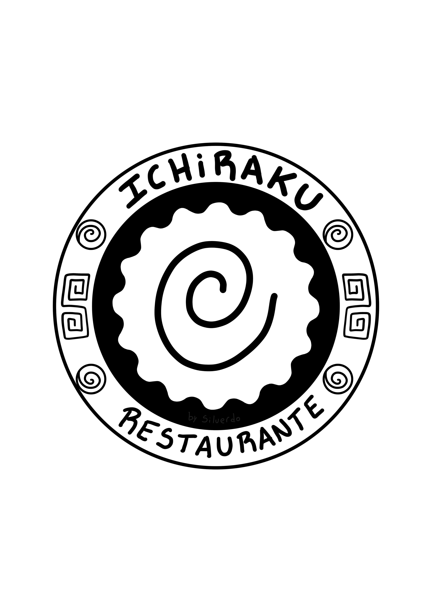
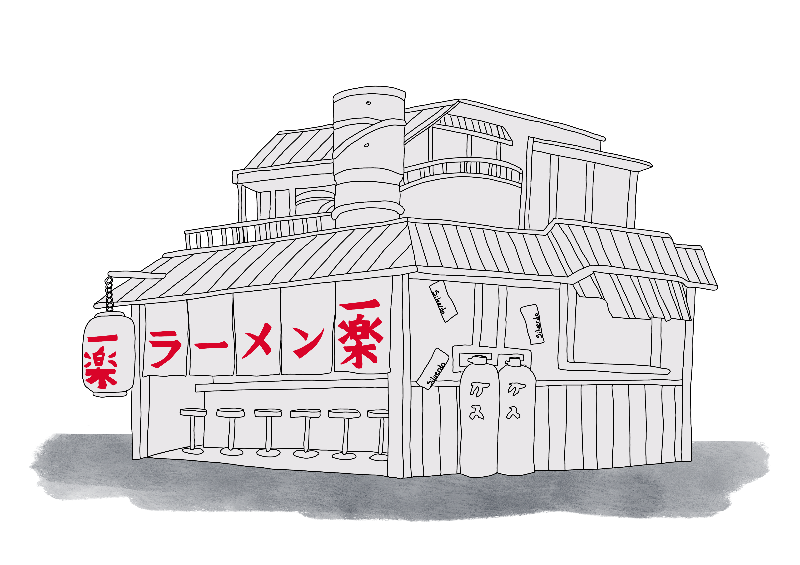

Ramen
Ramen tradicional preparado con caldo de carne y verduras frescas.

Restaurante especializado en comida tradicional japonesa.

Ramen tradicional preparado con caldo de carne y verduras frescas.
Sopa de soja fermentada con ingredientes frescos y condimentos tradicionales.